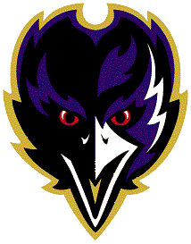

Example Paragraph 1
The idea was first broached with Kelechi Osemele this past August, but until last week, it never went beyond periodic conversations. Ravens coach John Harbaugh wanted Osemele, his standout left guard, to know he could be called on at some point to play left tackle. What started as a contingency plan has become a significant opportunity for Osemele, who passed his first NFL test at left tackle in Sunday's 35-6 loss to the Seattle Seahawks. As the Ravens play out the string, Osemele will try to prove he can handle another position, a task he's found challenging and invigorating. "It gets me working on my game.
It's something different every day," Osemele said. "It's a unique thing to go out there and work on something that you haven't been playing. So, it's just fun." It could be quite lucrative, too. In a little less than three months, Osemele is expected to hit a free agent market brimming with possibilities. He already was in line to earn a nice contract as one of the top available guards, but his experience playing left tackle figures to increase his market and perhaps his asking price. What's unclear for the Ravens is how Osemele's late-season position shift could affect their offseason plans. Eugene Monroe's ongoing injury issues have created a clear need, but if Osemele excels at left tackle, he could distance himself even further from the Ravens' price range.
Example Paragraph 2

The idea was first broached with Kelechi Osemele this past August, but until last week, it never went beyond periodic conversations. Ravens coach John Harbaugh wanted Osemele, his standout left guard, to know he could be called on at some point to play left tackle. What started as a contingency plan has become a significant opportunity for Osemele, who passed his first NFL test at left tackle in Sunday's 35-6 loss to the Seattle Seahawks. As the Ravens play out the string, Osemele will try to prove he can handle another position, a task he's found challenging and invigorating. "It gets me working on my game.
It's something different every day," Osemele said. "It's a unique thing to go out there and work on something that you haven't been playing. So, it's just fun." It could be quite lucrative, too. In a little less than three months, Osemele is expected to hit a free agent market brimming with possibilities. He already was in line to earn a nice contract as one of the top available guards, but his experience playing left tackle figures to increase his market and perhaps his asking price. What's unclear for the Ravens is how Osemele's late-season position shift could affect their offseason plans. Eugene Monroe's ongoing injury issues have created a clear need, but if Osemele excels at left tackle, he could distance himself even further from the Ravens' price range.
It's something different every day," Osemele said. "It's a unique thing to go out there and work on something that you haven't been playing. So, it's just fun." It could be quite lucrative, too. In a little less than three months, Osemele is expected to hit a free agent market brimming with possibilities. He already was in line to earn a nice contract as one of the top available guards, but his experience playing left tackle figures to increase his market and perhaps his asking price. What's unclear for the Ravens is how Osemele's late-season position shift could affect their offseason plans. Eugene Monroe's ongoing injury issues have created a clear need, but if Osemele excels at left tackle, he could distance himself even further from the Ravens' price range.